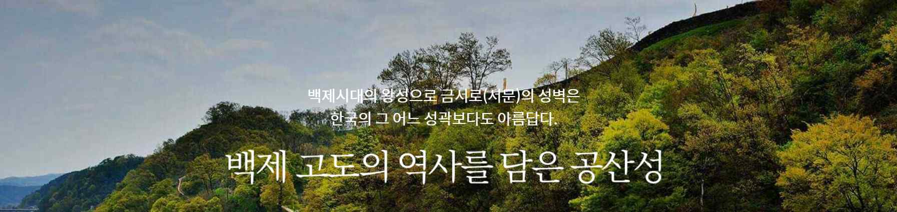

①
공산성
사적 제12호

백제 고도의 역사를 담은 공산성
📍
충남 공주시 웅진로 280 (산성동 2) 외
백제의 수도가 공주에 있을 때 공주를 지키던 백제의 산성입니다. 금강변 야산의 계곡을 둘러싼 산성으로, 원래는 흙으로 쌓은 토성이었으나 조선시대에 석성으로 고쳤습니다.
🔍 주요 볼거리
- 남문(진남루): 공산성의 대표 관문
- 공산성 성곽길: 총길이 약 2.6km
- 임류각: 조선시대 정자
- 왕궁지: 백제 왕궁 터 추정지
- 연지: 왕궁의 정원 인공 연못